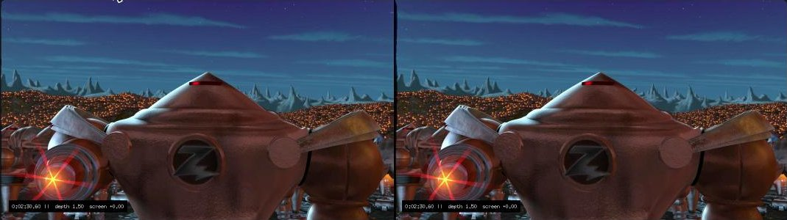
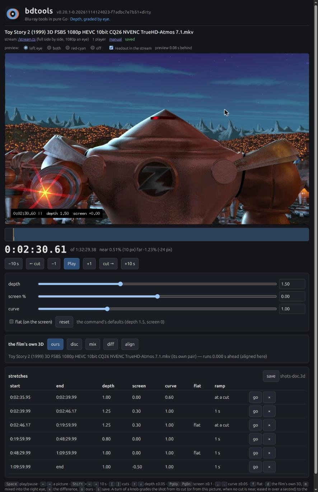
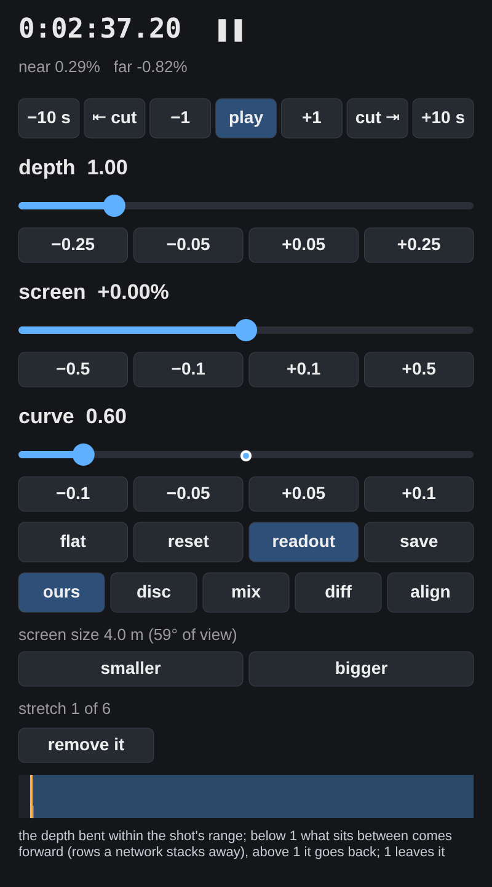
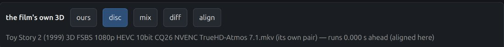
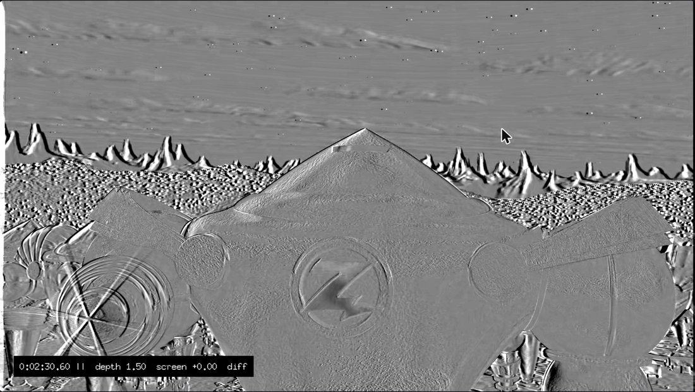

Grading a film's 3D by eye
This guide explains how to grade a 2D-to-3D conversion by eye with --3d-grade: how to start it, how to watch it, what each control does on the page and in the headset, and how what you set ends up in the finished film. It assumes you have run --to-3d at least once and that you have some way of seeing 3D, whether a television, a projector or a headset. If you want to know what the conversion does with the depth and how well it does it, that is in 2d-to-3d.md. The flags themselves are listed in the README.
Why grade at all
--to-3d estimates the depth of every picture and makes a left and a right eye from it. The default depth was measured against real 3D Blu-rays, and for most of a film it is right. But no automatic depth gets every shot right. These are the cases we keep running into:
- Sometimes the depth network reads a shot wrongly. The classic case is rows of people or things seen from below. The network stacks them away behind each other, when in the film they stand side by side. The curve knob is for this.
- A shot comes too far out of the screen, or sits too deep behind it. The depth and screen knobs fix that.
- Some pictures should have no depth at all: a title card, a screen within the picture, a map, a 2D insert. The flat knob puts them on the screen. (The end credits are found and flattened on their own.)
- Titles and logos laid over the picture should stand in front of the scene. The conversion lifts them on its own in the film's first 5 minutes. The titles knob turns that on or off for a stretch, for credits later in the film or for a sign it took for a title.
- A whole film may want a little more or less depth than the default.
Grading means setting the knobs for stretches of the film and saving them to a shots file, which the conversion proper reads. While you grade, nothing is written to a video file. Instead, the film is converted live as it plays, as fast as it plays, and you watch the result on a 3D screen or in a headset while you turn the knobs.
What you need
- A machine with an NVIDIA GPU. The depth network runs on it faster than the film plays, and NVENC encodes the live stream. Without one there is no live stream.
- The film, as an MKV, MP4 or MOV, or the disc image itself.
- Something that shows 3D. A 3D television or projector works if its player can take a live stream (Kodi and VLC can). A Meta Quest works through its browser. If all you have is a laptop, red-cyan paper glasses are enough for a rough check.
- Optionally, the film's own 3D release, if there is one, to compare against. More on that in Comparing with the film's own 3D.
Starting the server
Let's start with the command:
bdtools --input "Film (2020).mkv" --output "Film (2020).3d" --to-3d --3d-grade :8420It prints where everything is:
bdtools: --3d-grade: the controls at http://192.168.1.87:8420/, the 3D stream at http://192.168.1.87:8420/stream.ts (full side by side); the grade goes to Film (2020).3d
bdtools: --3d-grade: for a headset, https://192.168.1.87:8421/ (its certificate is this machine's own: accept it once), then Enter VRSo what did we ask for? --to-3d says this is a 2D-to-3D conversion. --3d-grade :8420 says: don't convert to a file, serve the film live on port 8420 instead. And --output is not a video file here. It is the shots file your grade is written to, at every change. Give it a name you will remember, because you will pass it to the conversion later.
A few things you may want to add:
--3d-shots FILEstarts from a grade you made earlier, or wrote by hand. It can be the same file as--output.--start 1:02:00opens the film at that time instead of the beginning.- Any other
--to-3dflag:--3d-depth,--3d-screen,--3d-curve,--3d-text,--depth-model,--3d-refine,--3d-fill,--3d-screen-size. These become what the page calls "the command's defaults", and every stretch you grade is set relative to them. This matters later: the conversion proper must be run with the same flags, or your stretches land on different defaults. See The conversion.
Watching the stream
The server serves the converted film as a live stream at http://HOST:8420/stream.ts. It is full side by side, 1080p per eye, H.264 in a transport stream, which is something most players can play live. You have a few ways to watch it.
Kodi on a box at the screen. Make a .strm file holding the address, and name it with the 3D tag your library uses, the same way the conversions are named, for example Film (2020) 3D FSBS.strm. Kodi then picks the side-by-side mode and the television shows it in 3D. One thing to know: Kodi buffers a few seconds by default, and that buffer is the delay between a turn of a knob and the screen. Its cache settings bring it under a second.
VLC, on a computer, a phone or a television. Open the address as a network stream and set the 3D mode to side by side.
A headset's browser. This needs no player at all. See In the headset.
The page's own preview. The control page shows the stream itself, under the controls, as the left eye alone, as both eyes side by side, or as a red-cyan anaglyph for paper glasses. It runs a tenth of a second behind the server, so it is the quickest way to check that a turn did what you meant.


There is also a readout drawn into the bottom of both eyes of the stream, at the screen's depth. It shows the time, whether the film is playing, the knobs, the current stretch and the view. It is there so that the screen tells you the state while your hands are on the page or the controllers. If you want a clean picture, the "readout in the stream" box turns it off.
The page
Open http://HOST:8420/ in any browser, on a laptop or a phone. Every control explains itself when you hover over it, but here is the tour, from the top.

Transport. Play or pause, a picture back or forward, ten seconds either way, and a jump to the cut before or after. A paused picture keeps its depth, so if you turn a knob while paused, the change shows at once (or rather, after the player's buffer).
The bar. This is the whole film. The stretches you have graded are blue bands, the current one lighter; the cuts seen so far are ticks along the bottom; the orange line is where you are. Click anywhere on it to seek. Under the bar are the time, the film's length, and where this picture's nearest and farthest points land, as a percentage of the width and in pixels. Keep an eye on the near figure: anything much past 1% in front of the screen strains the eyes.
The knobs. There are three, each a slider and a number, plus a checkbox and a menu. You can turn them from the keyboard too.

- depth scales the depth. 1 is what the 3D discs have, and the slider runs from 0.2 to 4. Turn it up for a shot that looks flat, down for one that strains.
- screen % moves the whole depth nearer or farther, in percent of the picture's width. Positive is nearer. Use it to bring a shot out of the screen or set it back without changing how deep it is.
- curve bends the depth within the shot's range. At 1 the depth is as the network gives it. Below 1, whatever sits between the shot's farthest and nearest points comes forward; above 1 it goes back. This is the knob for rows the network stacks away behind each other when the film has them side by side, such as a crowd or a line of things seen from below. Somewhere between 0.5 and 0.7 usually brings them to where a disc would have them. Don't make it a default, though. On ordinary shots it measures worse than 1.
- flat removes the depth and puts the picture on the screen. Use it for title cards, screens within the picture, maps and 2D inserts.
- titles says where the text laid over the picture, the titles, credits and studio logos, is lifted in front of the scene. auto lifts it in the film's first 5 minutes, on lifts it anywhere, and off leaves it at the depth of what it is written over. Set on for a stretch of credits over a scene later in the film, and off where a sign or a screen in the film was taken for a title. The detector looks two seconds ahead of the picture you see, so a line of text rises as it appears. When you change the knob on a paused picture, the lines the detector is sure of go up or down at once.
reset puts the current stretch back to the command's defaults. The text beside it tells you which stretch the knobs are grading, or that this picture is at the defaults.
The film's own 3D appears only when there is a reference. The buttons are ours, disc, mix, diff and align, and they are explained in Comparing with the film's own 3D.
Stretches. The table lists everything you have graded: where each stretch starts and ends, its knobs, whether it is flat, and how it comes in (at a cut, or eased in over some seconds). go seeks to a stretch's start. × removes it, and the stretch before then runs on over what it covered, or the defaults do if there is none. The save button writes the file, but you will rarely need it. The file is written at every change, and "saved" or "unsaved" at the top of the page tells you whether that worked.

Keys
| Key | What it does |
|---|---|
| Space | play or pause |
| ← → | a picture back or forward |
| Shift+← Shift+→ | ten seconds back or forward |
| [ ] | the cut before or after |
| ↑ ↓ | depth up or down by 0.05 |
| PgUp PgDn | screen up or down by 0.1 |
| , . | curve down or up by 0.05 |
| f | flat on or off |
| t | titles: auto, on, off, and round again |
| d, m, x, o | the disc's 3D, the mix, the difference, ours |
| s | save |
| p | paint an object, or stop painting |
| Enter | track the object painted |
| Esc | drop the hints painted |
How a turn becomes a stretch
You don't mark out stretches first and then grade them. You just turn a knob, and a stretch is made for it. Where it starts depends on where you are:
- If there is a cut within the two seconds before the current picture, the stretch starts at that cut. The idea is that you react to a shot a moment after it starts, so the stretch is snapped back to where the shot began, and the change happens at the cut, where no eye sees it.
- Otherwise the stretch starts at the current picture, and the change eases in over one second (
ramp=1in the file). An eased change is invisible where a jump would show.
The stretch runs until the next stretch starts, or to the end of the film. Turning a knob inside an existing stretch changes that stretch.
So the pattern is simple: play, notice a shot that is off, pause, turn until it looks right, play on. If only that one shot needed grading, play to its end and press reset there (or turn the knob back). That starts a new stretch at the next cut, with the defaults.
A word about the cuts. They are found while the film plays, by comparing each picture's thumbnail with the one before, so the bar only shows cuts for what has actually been played. Skipping ten seconds skips the cuts in between, and a dissolve is never a cut. And if you want a whole film a little deeper or shallower, don't make one huge stretch. Set --3d-depth and --3d-screen on the command instead, and grade only the shots that differ.
Objects
Some shots can't be put right with the knobs, because the knobs move the whole picture. The Disney castle at the start of Toy Story 2 is one. The "Walt Disney" wordmark gets the depth of the lake below the castle, so the depth and the screen move the letters and the lake together. An object is a part of the picture whose depth you move on its own. You paint it on one picture, the page follows it through its shot, and its push moves it nearer or farther than the scene around it.
To paint an object:
- Pause on a picture where the object is plain to see.
- Press paint, or
p. From now on the preview takes hints instead of clicks. - Drag a box around the object on the preview. A moment later the object shows in red in the stream and in the preview. The first time, the object finder is downloaded first, which takes a while.
- If the red misses part of the object, click on that part. That adds a point on the object, drawn in green. If the red takes in something that isn't the object, Shift-click on it. That adds a point off the object, drawn in red. Every hint makes the mask again.
- Press track, or
Enter. The page follows the object back to the cut before and on to the cut after, at most 10 seconds back and 30 seconds on. It stops early once the object has been gone for 2 seconds, so a logo that fades out does not hold it up. The stream shows each picture with its mask as it goes. On the Toy Story 2 castle it followed the wordmark through 163 pictures in about 19 seconds. - Set the object's push in the objects table. A push is a percent of the width, like the screen knob, and more brings the object nearer.
Esc, or cancel, drops the hints without making an object.
The objects table lists each object with the first and the last picture it was found on, its push and how many pictures it has a mask on. go seeks to its start. show draws its mask in red over the picture while you play, so you can check that it was followed well, and hide stops that. paint paints it again on the paused picture, and tracking from there replaces its masks where it goes. × removes the object. The bar under the preview shows each object as a red strip.
The object finder is SAM 2.1's tiny model, from Meta, under the Apache 2.0 license. It is downloaded once, 156 MB, into the same cache as the depth network. It finds an object from a box better than from points alone, so start with a box.
A session, step by step
- Start the server. Open the page on a laptop or phone, and start the player at the screen, or put the headset on and press Enter VR.
- Play from the start. Watch the picture and the near and far figures. Most shots will be fine. Let them go by.
- When a shot is off, pause. Step back a picture or two with ← until you see what caught your eye, then turn the knob. Check a second picture of the same shot (→, or play for a moment).
- Play on. You don't have to do anything at the end of the shot. The stretch ends where the next one begins, or at the end of the film, and the following shots get whatever is set. If they should be back at the defaults, press reset there.
- At the end, check that the top of the page says "saved", and stop the server with Ctrl-C.
- Run the conversion with the file, as described in The conversion. You can come back to the grade any time by starting the server again with
--3d-shots FILE.
In the headset
A headset's browser shows the same page, but over HTTPS and on the next port: https://HOST:8421/. The certificate is one the machine made for itself, so the browser will ask you about it once. Accept it. WebXR only works on a secure page, which is why the plain HTTP page has no Enter VR button.
Press Enter VR and the picture is on a four-metre screen in front of you, each eye seeing its own, with the page's controls on a panel to the right. Point the right controller at the panel: its ray puts a cursor there, and the trigger presses whatever is under it. Hold the trigger on a slider to drag it. The foot of the panel tells you what the cursor is over and when you would use it. From the top, the panel has the time and the near and far figures, the transport, the three knobs as sliders with step buttons, the titles buttons auto, on and off, flat, reset, the readout and save, the views when there is a reference, the screen's size, the current stretch with a button to remove it, and the timeline, which you press to seek.

You can also work the controllers without looking at the panel:
| Controller | What it does |
|---|---|
| right trigger | presses the panel; off the panel, play or pause |
| right stick up and down | depth up or down by 0.05 |
| right stick left and right | screen up or down by 0.1 |
| right grip | flat on or off |
| A, B | a picture forward, back |
| left trigger | ours, the disc's 3D, the mix, and round again |
| left stick left and right | the cut before, after |
| X, Y | ten seconds back, forward |
| both grips, held for a second | leave VR |
The "smaller" and "bigger" buttons change the size of the screen in VR, which is how much of your view the picture fills, like sitting nearer or farther. The depth itself does not change with it. In VR the page decodes the stream on its own and asks the headset for a 72 Hz display, where 24 pictures a second fit evenly. We tried this on the Quest's own browser. Whatever the page sees (which browser, each step into VR, any errors, how many frames it showed) goes to the server's log, which is the place to look if something does not work.
Comparing with the film's own 3D
If the film has a 3D release of its own, the sharpest way to grade is against it. --3d-reference FILE takes that release as a side-by-side or over-under file at the conversion's size, for example an MVC disc that bdtools converted:
bdtools --input "Film (2020).mkv" --output "Film (2020).3d" --to-3d --3d-grade :8420 \
--3d-reference "Film (2020) 3D FSBS.mkv"The page now has a row of views:

- ours is the conversion (the key
o). - disc is the film's own 3D at the same moment (
d). Switch back and forth to see what the stereographer did with the shot. - mix (
m) keeps the left eye and shows, as the right eye, a blend of the disc's and ours. Where the two depths agree the picture fuses. Where they differ it doubles, by exactly the difference. Turn the knobs until the doubles merge. - diff (
x) shows both eyes the difference between the two right eyes: mid grey where they agree, an embossed edge where they do not. This is the sharper tool for a small mismatch, and it shows at a glance whether it is the near or the far that is off.


- align is for the clocks. The two files' clocks differ when their discs do. Press align on a paused picture, and the server looks for that picture in the reference, eight seconds either side, and keeps the offset it finds. The text beside the buttons says how far ahead the reference runs, whether it is aligned, and whether the reference has a picture at this place at all.
The simplest reference is the 3D file itself. Give a side-by-side conversion of an MVC disc as the --input of --3d-grade, with no --3d-reference. Its left eye is what gets converted, and its own right eye is the reference, on the same clock, so disc flips between the stereographer's right eye and ours made from the same left eye. Bear in mind that the disc's right eye is a second camera. It sees behind edges where ours cannot, so judge the depth of the scene, not the edges.
The shots file
What the page writes is a plain text file that you can read and edit. Each line is a stretch:
# START [END] SETTINGS...
0:12:30 0:13:05 depth=0.8 screen=0 curve=1
1:02:10.5 1:02:40 flat
1:58:00 text=on
1:30:00 screen=-1 ramp=1
2:01:12 curve=0.6Times are the film's, as a player shows them. A line without an end runs to the next line's start, or to the end of the film. depth=, screen= and curve= are the knobs, text= is the titles knob (auto, on or off), flat puts the stretch on the screen, and ramp= is how many seconds a stretch that begins inside a shot eases in over. Anything a line does not set stays at the command's default, and where lines overlap, the later one wins. A # starts a comment. This is the same format --3d-shots reads, so you can write a grade by hand from notes, or touch up one the page wrote.
An object has a line of its own, which starts with object:
object 1 0:00:25.067 0:00:31.865 push=1.5The line gives the object's number, the first and the last picture it was found on, and its push. You can change the push by hand. The masks are in a second file beside the shots file, with .masks added to its name, one mask for each picture the object was followed through. Keep the two files together. The conversion reads the masks file when the shots file has objects.
The conversion
The conversion proper reads the file through --3d-shots. Give it the same --to-3d flags the grading command had, so that "the command's defaults" are the same ones:
bdtools --input "Film (2020).mkv" --output "Film (2020) 3D FSBS.mkv" --to-3d \
--3d-shots "Film (2020).3d"Any output of --to-3d takes the file: full or half side by side, over-under, MVC, MV-HEVC for a headset, or a Blu-ray 3D disc image. The file is part of what an interrupted conversion has to match in order to resume, so if you change the grade, the conversion starts over (and says so).
When something is off
There is no Enter VR button. You opened the page over HTTP. Use the HTTPS address the command printed and accept the certificate. If the command said "no HTTPS", the log says why.
The preview says the browser cannot play the stream. The preview needs a browser that plays H.264 through Media Source Extensions (Chrome, Edge, Safari and the Quest's browser all do). The stream itself still plays in a player.
The screen lags the knobs by many seconds. That is the player's own buffer. Turn Kodi's cache down, or use the page's preview to see the turn and the screen to judge it.
A cut is missing from the bar. Cuts are found as the film plays, so skipping over a stretch skips them, and a dissolve is never a cut. Turn the knob at the picture instead. The change eases in over a second.
The stream does not start. The live stream needs NVENC, which means an NVIDIA GPU. The command's log says what it could not open.
The page says "unsaved". A write to the shots file failed, and the log says why. Press s or the save button to try again.